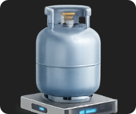
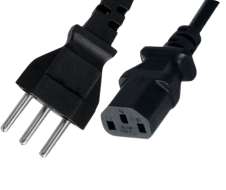
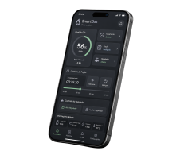

Instale e use em 4 passos
Um manual direto para montar o SmartGás Shield, conectar o aplicativo e deixar a cozinha protegida. Siga na ordem — cada passo leva poucos minutos.

Separe os itens da caixa
Confira se todos os componentes abaixo estão em mãos antes da instalação. A lista completa com valores está na página de Produto.
- ESP32
- Sensor de gás MQ-2
- Micro servo motor SG90
- Válvula solenoide 12V
- Módulo relé 1 canal 5V
- Célula de carga 50 kg
- Display LCD 16x2 com I2C
- Buzzer ativo 5V
- Fonte de alimentação 12V 2A
- Protoboard 830 pontos
- Kit de jumpers macho/fêmea
Quatro passos até a cozinha protegida
Siga na ordem abaixo. Cada etapa leva poucos minutos e não exige ferramentas especiais.
-

Feche o registro do botijão
Antes de qualquer instalação, feche o registro de gás do botijão por segurança.
-

Instale a válvula solenoide
Encaixe a válvula solenoide na saída do botijão, conectando-a ao módulo relé do SmartGás Shield.
-

Ligue na tomada
Conecte a fonte de alimentação e ligue o dispositivo — o sensor MQ-2 inicia o aquecimento automático.
-

Conecte ao aplicativo
Abra o app, encontre o dispositivo na rede e finalize o pareamento para acompanhar os alertas.
Veja o sistema funcionando na prática
O vídeo abaixo percorre exatamente os quatro passos deste manual, do registro fechado até o primeiro alerta chegando no celular.
Espaço reservado para o vídeo demonstrativo